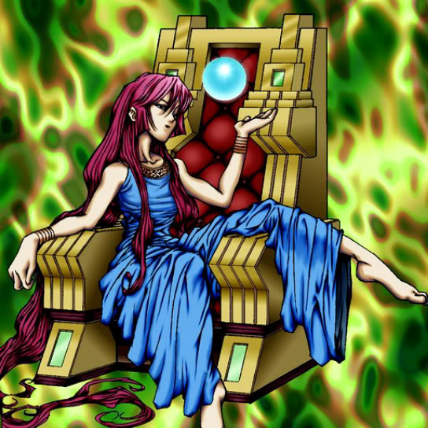

Protector of the Throne

STATS
ATK: 800
DEF: 1500DECK COST
Deck Cost per Card: 23Fusion List (8 Possible Fusions)
- Protector of the Throne + Fire Reaper = Zombie Warrior
- Protector of the Throne + Haniwa = Zombie Warrior
- Protector of the Throne + Little Chimera = Nekogal #2
- Protector of the Throne + Mask of Darkness = Invader of the Throne
- Protector of the Throne + Milus Radiant = Nekogal #2
- Protector of the Throne + Petit Dragon = Dragon Statue
- Protector of the Throne + Solitude = Invader of the Throne
- Protector of the Throne + Yamatano Dragon Scroll = Dragon Statue